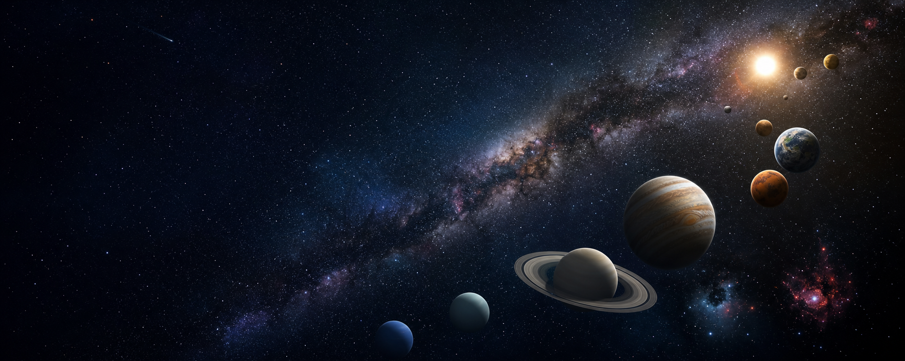

Milky Way
The landing page introduces the galaxy and sets the visual identity for Big Planetarium.
Current stop
Bristol space learning
A clear, cinematic guide to the Milky Way, built for curious visitors, school groups, keyboard users, and anyone who wants space to feel within reach.
The galaxy around us
The Milky Way is a barred spiral galaxy containing our Solar System, clouds of gas and dust, star-forming nebulae, and billions of stars. From Earth, its crowded disc can appear as a pale river of light across a dark sky.
Interactive media
The model is simplified for learning, with labelled planets and controls for motion.
Visit route
The landing page introduces the galaxy and sets the visual identity for Big Planetarium.
Current stopThe atlas compares all eight planets with local images and keyboard-friendly controls.
Explore planetsThe dedicated planet page focuses on Mars facts, mission themes, and a short quiz.
Enter mission